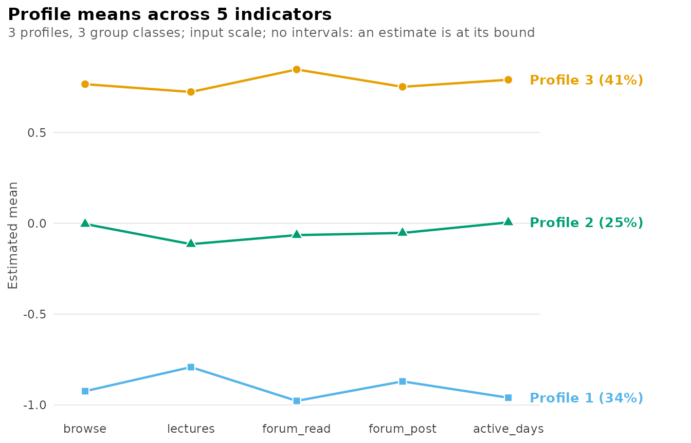
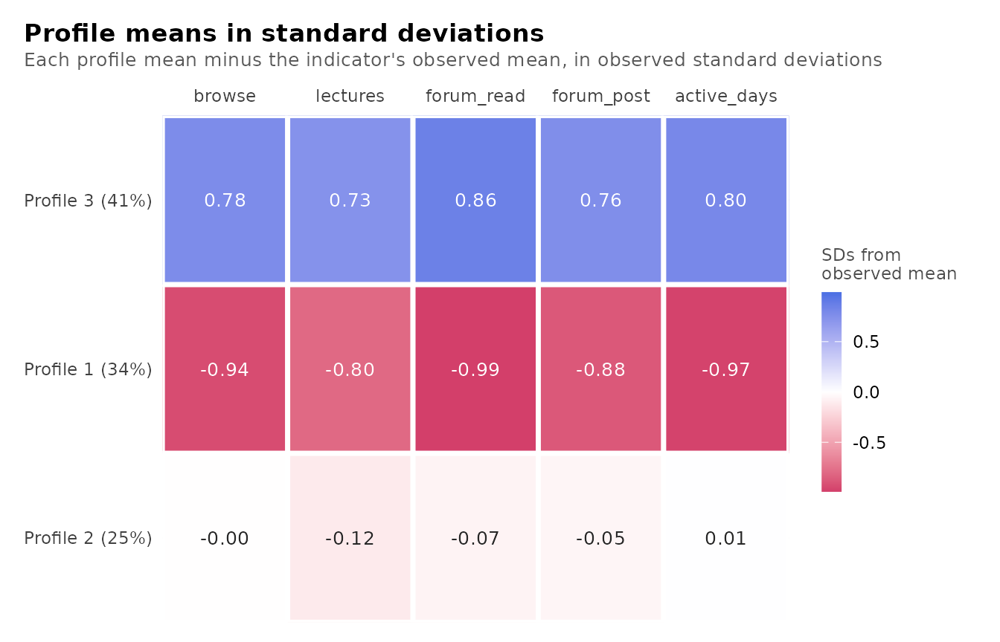
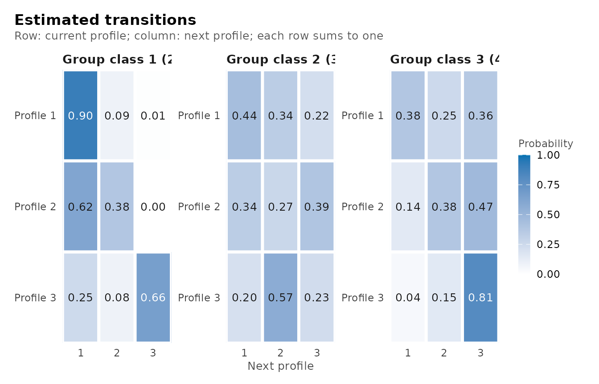
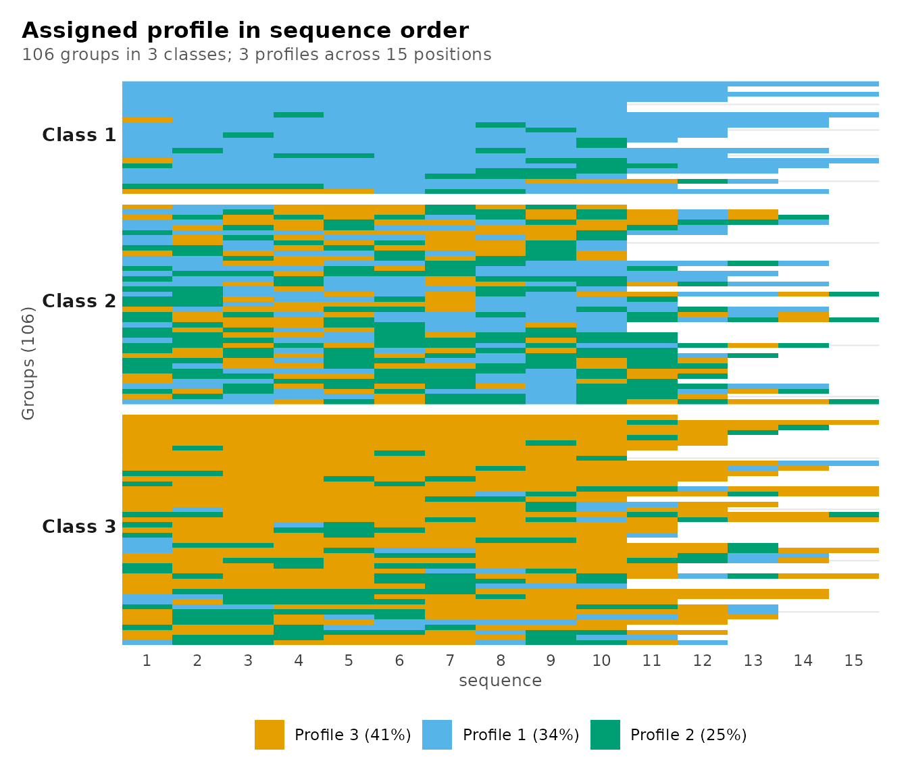
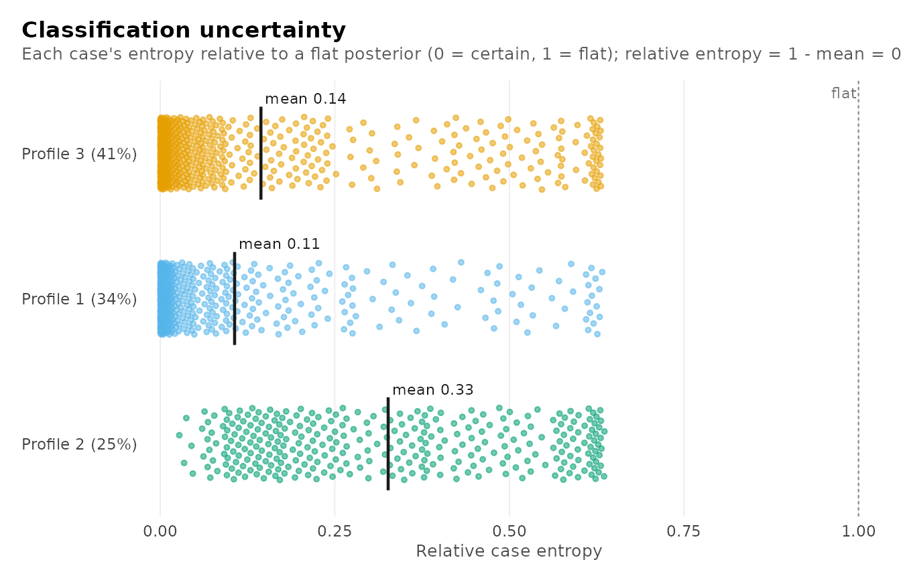
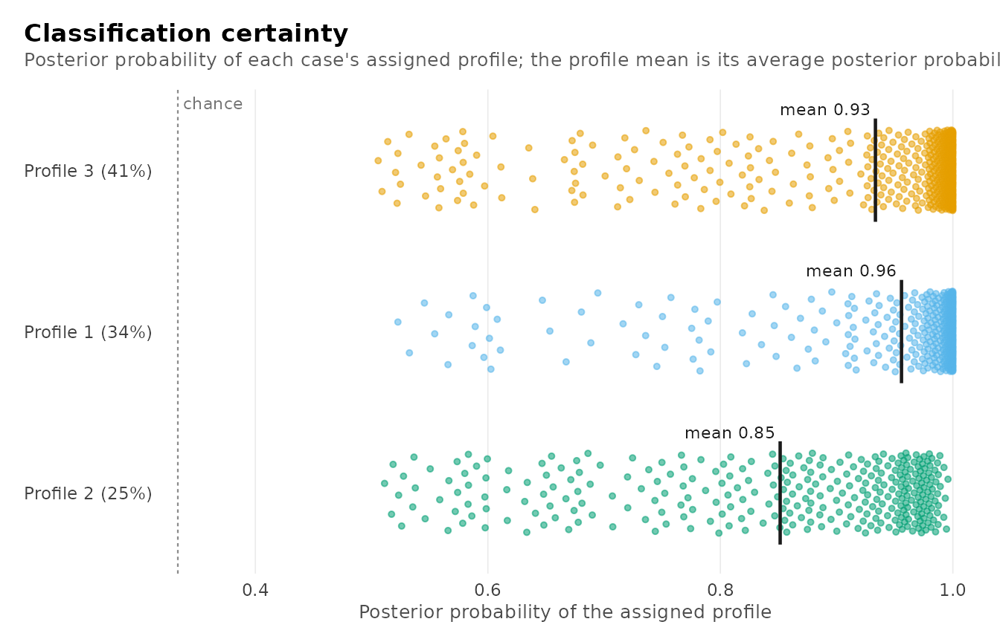
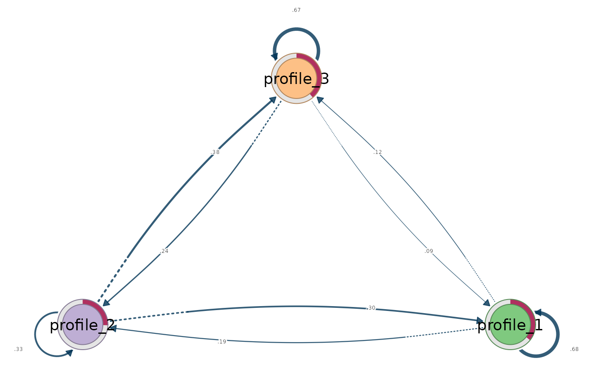
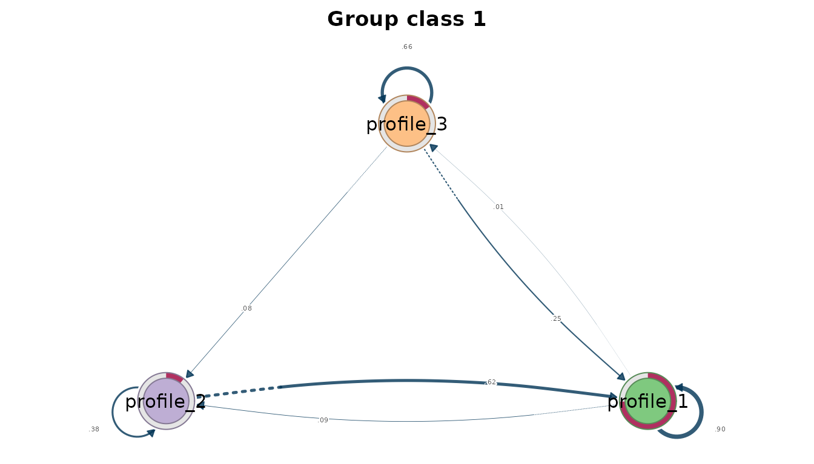
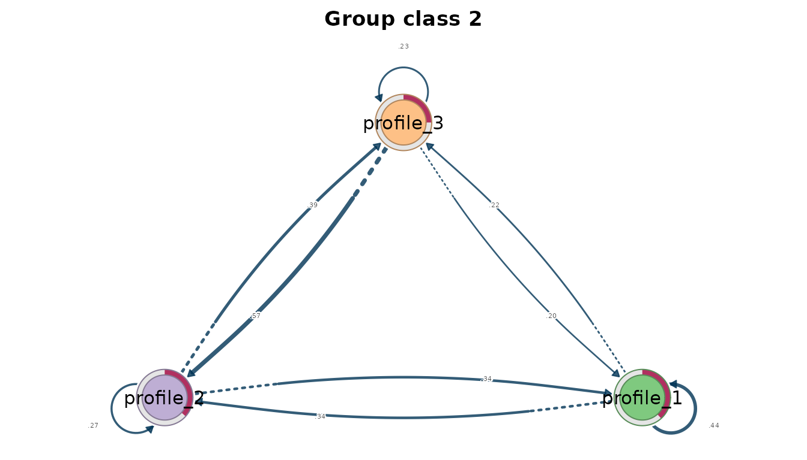
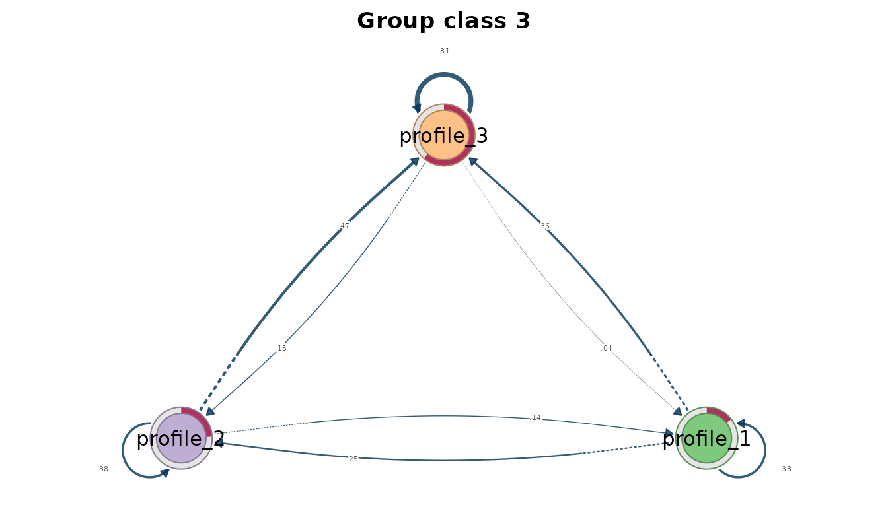

Case study: Latent transition analysis of course engagement with the latents R package
Mohammed Saqr
University of Eastern FinlandSonsoles López-Pernas
University of Eastern FinlandSource:
vignettes/articles/case-engagement-transitions.Rmd
case-engagement-transitions.RmdLatent transition analysis (LTA) estimates the probability of moving from one latent profile to another between consecutive occasions (Collins & Lanza, 2010). With group classes, each class has its own starting distribution and its own transition matrix, so the classes separate students who differ in how their engagement changes from students who differ only in where it starts.
Data and model
engagement_momentum holds 1,310 course enrolments of 106
students, ordered within each student by sequence. The five
indicators are simulated as continuous values on a log-activity scale
and standardized within course. The data are synthetic and follow the
design of the engagement studies of Saqr and López-Pernas (2021) and
López-Pernas and Saqr (2024), which identified course-level engagement
states with latent class analysis and followed students’ sequences of
states across a program. In the simulation, each student follows one of
three trajectories (engaged, fluctuating or mostly disengaged), each a
first-order Markov chain over three engagement states (active, average
and disengaged). Engaged students show momentum, in that an active
course tends to be followed by another active course; mostly disengaged
students show inertia, in that a disengaged course tends to be followed
by another disengaged course. Three profiles and three student classes
therefore match the structure from which the data were generated, and
the evaluation vignette
shows that the BIC selects the same numbers for the multilevel profile
model.
For student at course position , is the latent profile and the student’s class. The model estimates
- the initial probabilities ,
- the transition probabilities , which sum to one across destinations ,
- and a Gaussian mean and variance for each profile and indicator.
The transitions are first order and homogeneous: the next profile depends only on the current profile and the student’s class, and the probabilities are the same at every position. Profile means and variances are shared across positions and classes, so a change of profile is a change of state. Indicators are independent within a profile under the default diagonal covariance. The fit can fail to reach the global maximum from a single start, and a transition that is rare within a class is estimated from little information; the expected count of each transition shows how much.
library(latents)
vars <- c("browse", "lectures", "forum_read", "forum_post", "active_days")
moves <- lta(engagement_momentum, vars, "student", n_profiles = 3,
n_group_classes = 3, time = "sequence", n_starts = 10, seed = 1)
#> Warning: An initial, transition or group-class probability is at its numerical boundary; Wald
#> inference is withheld.
get_results(moves, "starts")
#> start log_likelihood converged iterations error
#> 1 1 -7444 TRUE 43 <NA>
#> 2 2 -7444 TRUE 47 <NA>
#> 3 3 -7444 TRUE 30 <NA>
#> 4 4 -7444 TRUE 46 <NA>
#> 5 5 -7444 TRUE 26 <NA>
#> 6 6 -7444 TRUE 38 <NA>
#> 7 7 -7444 TRUE 30 <NA>
#> 8 8 -7444 TRUE 46 <NA>
#> 9 9 -7444 TRUE 30 <NA>
#> 10 10 -7444 TRUE 39 <NA>All ten starts converge to the same log likelihood, so the solution is replicated within this seed’s starts. The warning reports that one estimated probability lies at its numerical boundary; the section on sparse and boundary estimates below identifies it.
The profiles
plot_profiles() draws the profile means across the
indicators, and each line’s label gives the profile’s share of the
enrolments.
plot_profiles(moves)
get_results(moves)
#> profile indicator mean variance standard_deviation mean_standard_error
#> 1 1 browse -0.923714 0.3678 0.6065 0.03168
#> 2 1 lectures -0.791300 0.4152 0.6443 0.03251
#> 3 1 forum_read -0.977232 0.2957 0.5438 0.02844
#> 4 1 forum_post -0.869964 0.3856 0.6210 0.03222
#> 5 1 active_days -0.959655 0.3397 0.5828 0.03129
#> 6 2 browse -0.003945 0.4593 0.6777 0.05270
#> 7 2 lectures -0.114705 0.5683 0.7539 0.05394
#> 8 2 forum_read -0.065051 0.4242 0.6513 0.05302
#> 9 2 forum_post -0.053149 0.4361 0.6604 0.04942
#> 10 2 active_days 0.005032 0.4118 0.6417 0.04873
#> 11 3 browse 0.765447 0.4967 0.7048 0.03439
#> 12 3 lectures 0.722691 0.6362 0.7976 0.03910
#> 13 3 forum_read 0.846368 0.3607 0.6006 0.03040
#> 14 3 forum_post 0.750965 0.5959 0.7719 0.03750
#> 15 3 active_days 0.789730 0.4552 0.6747 0.03422
#> variance_standard_error
#> 1 0.02681
#> 2 0.02908
#> 3 0.02226
#> 4 0.02792
#> 5 0.02642
#> 6 0.04686
#> 7 0.05225
#> 8 0.04176
#> 9 0.04283
#> 10 0.04271
#> 11 0.03299
#> 12 0.04223
#> 13 0.02446
#> 14 0.03863
#> 15 0.03178Profile 1 is the disengaged state, Profile 2 the average state and Profile 3 the active state, with means of days active of -0.960, 0.005 and 0.790 standard deviations from the course mean. The heatmap shows the same means as standard deviations from each indicator’s grand mean.
plot_profiles(moves, what = "heatmap")
The contrast between profiles is present on all five indicators, so the profiles differ in overall activity more than in its composition.
Where students start
In the "initial" table, probability is
,
the chance of starting in each profile. prevalence is the
expected share of all of a class’s enrolments in that profile, across
the whole history, and group_class_probability is the share
of students in the class.
get_results(moves, "initial")
#> group_class profile probability prevalence group_class_probability
#> 1 1 1 0.7461 0.82094 0.2178
#> 2 1 2 0.1063 0.12384 0.2178
#> 3 1 3 0.1476 0.05522 0.2178
#> 4 2 1 0.3834 0.33770 0.3408
#> 5 2 2 0.3665 0.37729 0.3408
#> 6 2 3 0.2501 0.28501 0.3408
#> 7 3 1 0.1451 0.10101 0.4414
#> 8 3 2 0.2421 0.21144 0.4414
#> 9 3 3 0.6128 0.68755 0.4414Student class 1, with 21.8% of students, starts in the disengaged profile with probability 0.746, and 0.821 of its enrolments are expected there over the whole history. Class 3, with 44.1% of students, starts in the active profile with probability 0.613, and 0.688 of its enrolments are expected there. Class 2, with 34.1% of students, starts across all three profiles, with probabilities 0.383, 0.367 and 0.250, and spends its enrolments in similar proportions. Class 1 is therefore the mostly disengaged class, class 2 the fluctuating class and class 3 the engaged class. In classes 1 and 3, the expected share of enrolments in the dominant profile exceeds the probability of starting there: over the program, students drift towards the state that their class favours.
How engagement changes
The "transitions" table gives
for every class and pair of profiles. stable marks staying
in the same profile. expected_count is the posterior
expected number of such transitions in the data, so it can be
fractional, and it shows how much information supports each estimate.
estimated = FALSE would mark a row the data cannot inform,
because the profile is never occupied before a student’s last course;
such a row holds uniform placeholder values. Every row is estimated in
this fit.
get_results(moves, "transitions")
#> group_class from to probability expected_count origin_expected_count supported stable estimated
#> 1 1 1 1 9.035e-01 1.963e+02 217.22 TRUE TRUE TRUE
#> 2 1 1 2 8.718e-02 1.894e+01 217.22 TRUE FALSE TRUE
#> 3 1 1 3 9.299e-03 2.020e+00 217.22 TRUE FALSE TRUE
#> 4 1 2 1 6.171e-01 2.141e+01 34.70 TRUE FALSE TRUE
#> 5 1 2 2 3.829e-01 1.329e+01 34.70 TRUE TRUE TRUE
#> 6 1 2 3 2.284e-08 4.974e-07 34.70 TRUE FALSE TRUE
#> 7 1 3 1 2.503e-01 4.007e+00 16.01 TRUE FALSE TRUE
#> 8 1 3 2 8.482e-02 1.358e+00 16.01 TRUE FALSE TRUE
#> 9 1 3 3 6.649e-01 1.064e+01 16.01 TRUE TRUE TRUE
#> 10 2 1 1 4.422e-01 5.979e+01 135.23 TRUE TRUE TRUE
#> 11 2 1 2 3.376e-01 4.565e+01 135.23 TRUE FALSE TRUE
#> 12 2 1 3 2.202e-01 2.978e+01 135.23 TRUE FALSE TRUE
#> 13 2 2 1 3.370e-01 5.108e+01 151.58 TRUE FALSE TRUE
#> 14 2 2 2 2.700e-01 4.093e+01 151.58 TRUE TRUE TRUE
#> 15 2 2 3 3.930e-01 5.957e+01 151.58 TRUE FALSE TRUE
#> 16 2 3 1 2.035e-01 2.378e+01 116.83 TRUE FALSE TRUE
#> 17 2 3 2 5.657e-01 6.610e+01 116.83 TRUE FALSE TRUE
#> 18 2 3 3 2.307e-01 2.695e+01 116.83 TRUE TRUE TRUE
#> 19 3 1 1 3.821e-01 1.902e+01 49.78 TRUE TRUE TRUE
#> 20 3 1 2 2.541e-01 1.265e+01 49.78 TRUE FALSE TRUE
#> 21 3 1 3 3.638e-01 1.811e+01 49.78 TRUE FALSE TRUE
#> 22 3 2 1 1.431e-01 1.647e+01 115.06 TRUE FALSE TRUE
#> 23 3 2 2 3.835e-01 4.412e+01 115.06 TRUE TRUE TRUE
#> 24 3 2 3 4.734e-01 5.447e+01 115.06 TRUE FALSE TRUE
#> 25 3 3 1 4.416e-02 1.623e+01 367.59 TRUE FALSE TRUE
#> 26 3 3 2 1.479e-01 5.437e+01 367.59 TRUE FALSE TRUE
#> 27 3 3 3 8.079e-01 2.970e+02 367.59 TRUE TRUE TRUE
#> group_class_probability
#> 1 0.2178
#> 2 0.2178
#> 3 0.2178
#> 4 0.2178
#> 5 0.2178
#> 6 0.2178
#> 7 0.2178
#> 8 0.2178
#> 9 0.2178
#> 10 0.3408
#> 11 0.3408
#> 12 0.3408
#> 13 0.3408
#> 14 0.3408
#> 15 0.3408
#> 16 0.3408
#> 17 0.3408
#> 18 0.3408
#> 19 0.4414
#> 20 0.4414
#> 21 0.4414
#> 22 0.4414
#> 23 0.4414
#> 24 0.4414
#> 25 0.4414
#> 26 0.4414
#> 27 0.4414The transition plot draws each class’s matrix as a heatmap, with the origin profile in rows and the destination in columns.
plot_transitions(moves)
In class 1, a disengaged course is followed by another disengaged course with probability 0.904, estimated from 196 expected transitions, and an average course is followed by a disengaged one with probability 0.617 (from 34.7 expected transitions): disengagement has inertia, and the average state leads back into it. In class 3, an active course is followed by another active course with probability 0.808, estimated from 297 expected transitions, and an average course is followed by an active one with probability 0.473: engagement has momentum. Class 2 has no dominant transition; its largest probability, 0.566, takes an active course to an average one, and its other probabilities lie between 0.20 and 0.44. These are the patterns of the generating model, in which disengagement and activity persist with probability 0.85 in the corresponding trajectories, and the fluctuating trajectory moves between states with probabilities between 0.25 and 0.40.
Sparse and boundary estimates
Some estimates rest on little information. Students in class 1 rarely occupy the active profile, so its transitions out of the active profile rest on 16.0 expected transitions and those out of the average profile on 34.7. Its probability of moving from the average to the active profile is at its lower bound, which is why Wald inference is withheld for this fit. A probability near zero shows that the data carry little information about that movement, not that the movement is impossible: in the generating model, mostly disengaged students move from the average to the active state with probability 0.10. Estimates like these can also mean that the chosen number of classes divides the available transitions too finely.
Assigned sequences
The sequence plot shows each student’s modal profile at each course position, one row per student. Modal assignment discards classification uncertainty.
plot_sequences(moves)
get_results(moves, "sequence_summary")
#> group_class groups observations mean_length median_length shortest longest complete gaps
#> 1 1 22 278 12.64 12.5 10 15 4 0
#> 2 2 39 473 12.13 12.0 10 15 3 0
#> 3 3 45 559 12.42 12.0 10 15 8 0The summary gives the number of students and courses in each assigned class: 22 students with 278 courses in class 1, 39 with 473 in class 2 and 45 with 559 in class 3. Sequence lengths range from 10 to 15 courses, so the rows of the plot end at different positions. The long runs of the disengaged profile in class 1 and of the active profile in class 3 are the inertia and momentum of the transition table, seen in the individual histories.
Classification uncertainty
get_results(moves, "entropy")
#> level n_classes n_units entropy_sum relative_entropy
#> 1 individuals 3 1310 252.04 0.8249
#> 2 groups 3 106 26.32 0.7740Relative entropy is 0.825 for enrolments and 0.774 for students. The entropy plot shows, within each profile, how the per-case entropy contributions are distributed, and the posterior plot shows the posterior probability of each case’s assigned profile.
plot_diagnostics(moves, what = "entropy")
plot_diagnostics(moves, what = "posteriors")
Both levels retain uncertainty, so an analysis that replaces the posteriors by modal assignments treats some enrolments and students as more certain than the model estimates them to be.
Transition networks
get_tna() returns the marginal transition matrix as a
model of the tna package (Tikka et al., 2025). It pools the posterior
expected transition counts across classes and normalizes them, so it
uses the estimated transitions, not transitions counted from modal
assignments. get_group_tna() returns one network per
class.

per_class <- get_group_tna(moves)
plot(per_class)


The class networks show the patterns of the transition table: a dominant self-loop on the disengaged profile in class 1, movement among all three profiles in class 2, and a dominant self-loop on the active profile in class 3.
Recovery of the generating structure
The same check against the generating states and trajectories as in the introductory vignette applies to the transition model.
get_results(moves, "assignments", data = engagement_momentum,
truth = c("state", "trajectory"))
#> assignment class truth value n proportion
#> 1 profile 1 state active 0 0.00000
#> 2 profile 2 state active 37 0.06740
#> 3 profile 3 state active 512 0.93260
#> 4 profile 1 state average 30 0.09288
#> 5 profile 2 state average 258 0.79876
#> 6 profile 3 state average 35 0.10836
#> 7 profile 1 state disengaged 418 0.95434
#> 8 profile 2 state disengaged 20 0.04566
#> 9 profile 3 state disengaged 0 0.00000
#> 10 group_class 1 trajectory engaged 1 0.02326
#> 11 group_class 2 trajectory engaged 4 0.09302
#> 12 group_class 3 trajectory engaged 38 0.88372
#> 13 group_class 1 trajectory fluctuating 1 0.02439
#> 14 group_class 2 trajectory fluctuating 33 0.80488
#> 15 group_class 3 trajectory fluctuating 7 0.17073
#> 16 group_class 1 trajectory mostly_disengaged 20 0.90909
#> 17 group_class 2 trajectory mostly_disengaged 2 0.09091
#> 18 group_class 3 trajectory mostly_disengaged 0 0.00000The transition model recovers the states as well as the multilevel profile model does: 93.3%, 79.9% and 95.4% of the active, average and disengaged enrolments, against 92.9%, 79.9% and 94.7%. It recovers the engaged and mostly disengaged trajectories about as well (88.4% and 90.9%, against 86.0% and 90.9%), but the fluctuating trajectory less well (80.5%, against 95.1%).
Limitations
The model assumes constant transition probabilities across course
positions, so change specific to one stage of the program is averaged
over positions; the simulated data satisfy this assumption, but applied
data need not. Transitions are between successive observed courses,
which can differ in duration, content and assessment. Class differences
describe patterns in engagement histories and do not identify their
causes. Wald standard errors are withheld for this fit because class 1’s
probability of moving from the average to the active profile sits at its
lower bound, and the numbers of profiles and classes were not compared
for the transition model here; enumerate_classes() with
time compares transition models over a grid of profile and
class counts. Transitions supported by few expected counts, such as
those out of the active profile in class 1, should not be
interpreted.
References
Collins, L. M., & Lanza, S. T. (2010). Latent class and latent transition analysis. Wiley.
López-Pernas, S., & Saqr, M. (2024). How the dynamics of engagement explain the momentum of achievement and the inertia of disengagement: A complex systems theory approach. Computers in Human Behavior, 153, 108126. https://doi.org/10.1016/j.chb.2023.108126
Saqr, M., & López-Pernas, S. (2021). The longitudinal trajectories of online engagement over a full program. Computers & Education, 175, 104325. https://doi.org/10.1016/j.compedu.2021.104325
Tikka, S., López-Pernas, S., & Saqr, M. (2025). tna: An R package for transition network analysis. Applied Psychological Measurement, 49(6), 326–328. https://doi.org/10.1177/01466216251348840